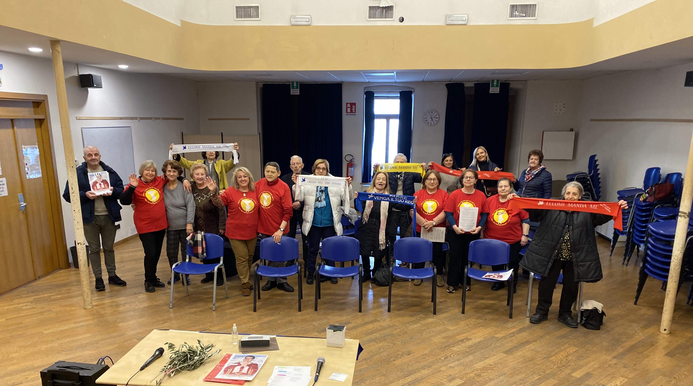

La Comunità Gesù Risorto fa parte del Rinnovamento Carismatico Cattolico, una corrente di grazia che aiuta a vivere una relazione viva con Dio attraverso lo Spirito Santo.

La comunità nasce con l’obiettivo di formare gruppi di lode ed evangelizzazione, che vivano e testimonino la presenza di Cristo risorto nel mondo.
Attraverso la preghiera, il canto e l’ascolto dello Spirito Santo, ogni persona è accompagnata a riscoprire l’amore di Gesù, capace di guarire, liberare e dare nuova speranza.
“Essere Gesù insieme”: lasciarsi trasformare da Lui nella vita quotidiana.
La comunità si riunisce ogni lunedì per momenti di preghiera e condivisione. Organizza seminari sulla fede, incontri di crescita spirituale e momenti di intercessione per le necessità dei fedeli.
Orari e luogo
Lunedì 17:00 – 18:15
Oratorio (inverno) • Chiesa San
Francesco (estate)